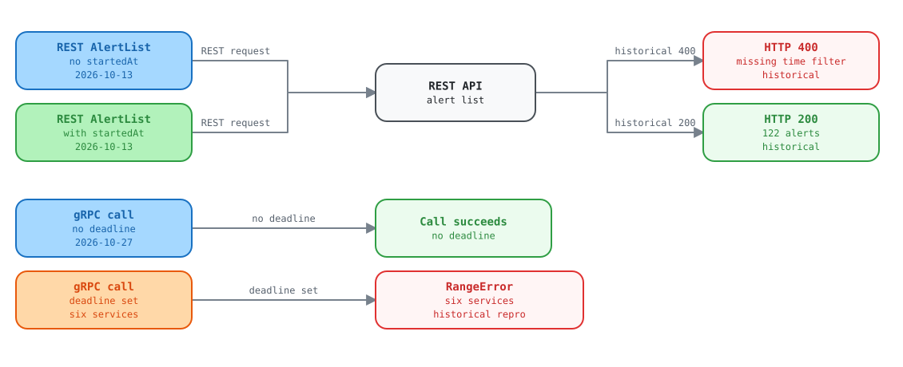

Alerting: the backend needs startedAt, and every gRPC RPC returns 500
Report for the Kentik API team
Observed 2026-10-13 against the live V6 API with the Kentik community Python SDK. Schema checked: api-schema-public commit 9de9a68.
NoteCurrent status, 2026-10-27: the alert-list requirement no longer reproduces. Seven read-only request bodies returned HTTP 200, including an empty body. The broad gRPC claim below was narrowed by later tests. Calls without deadlines worked. A deadline caused
RangeErroron six services. See the current findings tracker for the current ticket list.
Issue 1: REST POST /v202505/alerts rejects a request with no startedAt
The proto marks every field of AlertServiceListRequest and AlertFilters
as OPTIONAL. started_at has the default {}. The operation
description does not mention a required time range. The live API returns
400 backend request error for every request that has no filters.startedAt.
| Request body | Result |
|---|---|
{} |
400 |
{"pagination":{"limit":5}} |
400 |
{"sorting":{"field":"startedAt"}} |
400 |
{"filters":{"states":["ALERT_STATE_ACTIVE"]}} |
400 |
{"filters":{"activeAt":{"start":"...","end":"..."}}} |
400 |
{"filters":{"startedAt":{"start":"now-30d","end":"now"}}} |
200, 122 alerts |
Other v202505 list routes (silence, auto-ack) accept an empty body.
NoteAsk: either accept a request without
startedAt(the documented default), or mark the fieldREQUIREDin the proto and describe the rule in the operation text. Please also return a message that names the missing field instead ofbackend request error.
Issue 2: every alerting gRPC RPC returns 500 RangeError
All alerting RPCs we tried fail over gRPC with the same error. The same calls work over REST, and
other gRPC services work on the same account (for example device list, and the mkp lists).
| Operation | REST | gRPC |
|---|---|---|
Alert Get with id does-not-exist |
404 | 500 RangeError |
Alert List (empty request, and with startedAt) |
200 with startedAt |
500 RangeError |
Silence, mitigation method, mitigation platform, policy, suppression List |
200 (silence checked) | 500 RangeError |
Mitigation List, AvailableActions |
200 | 500 RangeError |
Mitigation Get, AvailableActionsForMitigation with id 999999999 |
404 | 500 RangeError |
Mitigation Create, then Get, Act STOP and DELETE on it |
200, all succeed | 500 RangeError |
The failure does not depend on the request content: a Get with one string id fails the same way as a List
with a hand-built proto message. The 500 carries no status details. The response comes from the gateway
with x-envoy-upstream-service-time: 29 (ms), so an upstream service received the call and failed.
Write RPCs fail the same way: a gRPC mitigation Create and Act both returned the error
on a lab account, while the same calls over REST succeeded.
code : StatusCode.INTERNAL
details : internal error (name:RangeError type:object) (errxid db77tw34km2g0gtxpkgg)
server : envoy x-envoy-upstream-service-time: 29
NoteAsk: check the alerting service behind the gRPC route. A
RangeErroris a JavaScript error, so it looks like an unhandled exception in that service for every gRPC request.

Open the interactive explorer to select each part and see its evidence.
Related: ktbgp RouteService.List returns 501
/kentik.ktbgp.v202501.RouteService/List is declared in the proto, but the server answers
501: The server does not implement the method.
Request ids: REST 400 db77aqa4km2g0tk1g020; gRPC 500 db77tw34km2g0gtxpkgg.
Request ids: REST 400 db77aqa4km2g0tk1g020; gRPC 500 db77tw34km2g0gtxpkgg.